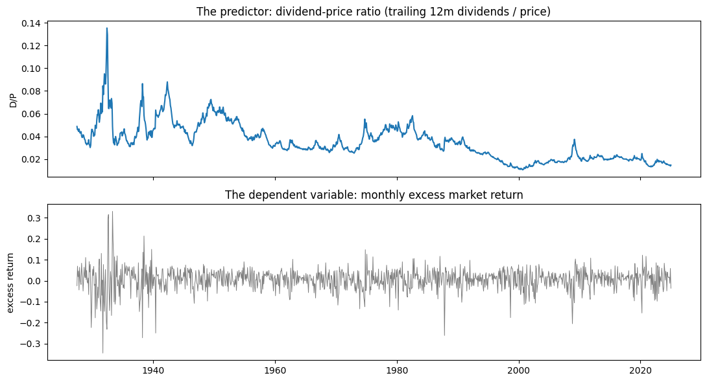
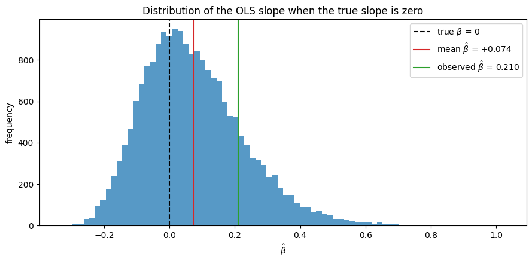
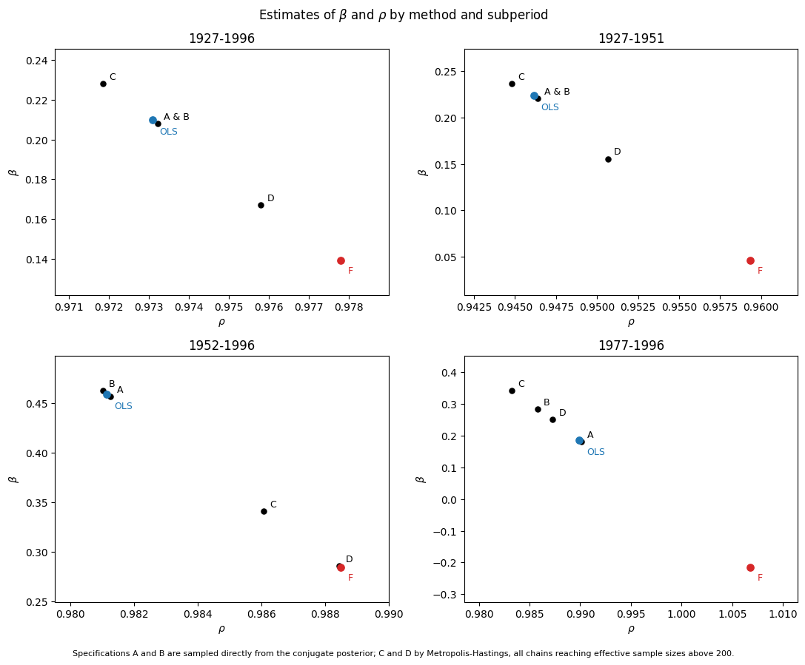

Replicating Stambaugh (1999), “Predictive Regressions”#
Does the dividend-price ratio predict stock returns? For decades the standard test was a simple regression of next month’s return on this month’s dividend yield, and it usually produced a positive, “significant” slope. Stambaugh (1999) shows that this test is broken in a specific and quantifiable way: the regression’s slope estimator is biased upward in finite samples, so a positive slope is exactly what one should expect even when the true slope is zero.
The cause is that the dividend yield and the return share a price. A shock that raises the price this month raises the return and simultaneously lowers the yield (price sits in the denominator). Those two shocks are therefore strongly negatively correlated – about -0.95 in our data – and that correlation, combined with a predictor so persistent it is nearly a random walk, is what tilts the estimator.
This notebook walks through the whole replication: how we built the data, why the estimator misbehaves, what the corrected numbers look like, and how the picture changes when we extend the sample to 2024.
import sys
sys.path.insert(0, ".")
import matplotlib.pyplot as plt
import numpy as np
from calc_predictor_data import load_tidy_panel
from create_table_01_partC import SUBSAMPLES, UPDATE_SUBSAMPLES, fit_subsample
from monte_carlo import (
analytical_slope_bias,
simulate_slopes,
summarize_distribution,
true_pvalue,
)
from stambaugh_bias import bias_adjusted_slope, bias_correct_rho
from bayesian import (
exact_likelihood_log_weights,
posterior_moments,
sample_posterior,
weighted_moments,
)
panel = load_tidy_panel()
print(f"{len(panel)} monthly observations, "
f"{panel['date'].min().date()} to {panel['date'].max().date()}")
panel.tail()
1171 monthly observations, 1927-06-30 to 2024-12-31
| date | vwretd | vwretx | rf | ret_excess | totval | price_index | div_monthly | div_ttm | dp_ratio | log_dp | |
|---|---|---|---|---|---|---|---|---|---|---|---|
| 1166 | 2024-08-31 | 0.021572 | 0.020203 | 0.0048 | 0.016554 | 70854066700.0 | 343.894004 | 0.461468 | 5.053705 | 0.014696 | -4.220212 |
| 1167 | 2024-09-30 | 0.020969 | 0.019485 | 0.004 | 0.01676 | 72318924000.0 | 350.594779 | 0.510339 | 5.151828 | 0.014695 | -4.220279 |
| 1168 | 2024-10-31 | -0.008298 | -0.009139 | 0.0039 | -0.012225 | 71771754400.0 | 347.390693 | 0.29485 | 5.181914 | 0.014917 | -4.205276 |
| 1169 | 2024-11-30 | 0.064855 | 0.063463 | 0.004 | 0.058847 | 76451547300.0 | 369.437149 | 0.483568 | 5.143478 | 0.013922 | -4.274251 |
| 1170 | 2024-12-31 | -0.031582 | -0.03347 | 0.0037 | -0.035785 | 74032373700.0 | 357.072088 | 0.697497 | 5.240361 | 0.014676 | -4.221547 |
1. The data#
Everything comes from two WRDS pulls.
The market index (crsp.msi). This is CRSP’s pre-aggregated monthly
value-weighted market index, not the security-level stock file. CRSP has
already done the cap-weighting, so we consume a finished series instead of
rebuilding it from thousands of rows per month (which would require lagged
market-cap weights and delisting-return handling – easy to get subtly wrong).
The dividend series, without a dividend database. The index file reports
the value-weighted return two ways: vwretd includes dividends, vwretx
excludes them. Their difference is therefore the month’s dividend expressed as
a fraction of last month’s price. Compounding vwretx gives a price level
\(P_t\), so the dividend in index units is
\(D_t = (\text{vwretd}_t - \text{vwretx}_t) \cdot P_{t-1}\). Summing twelve
trailing months gives an annual dividend, and the predictor is \(D_{12,t}/P_t\).
The risk-free rate (ff.factors_monthly). The dependent variable is the
excess return: predictability is about compensation for risk, and the
risk-free component is known in advance. We use continuously compounded
excess returns, \(\log(1+R_m) - \log(1+R_f)\), matching the paper’s Table 1
note. This detail mattered: with simple returns our slopes ran roughly 50%
high in the volatile pre-war subsamples, and switching to log returns brought
the full-sample slope to 0.2100 against the paper’s 0.21.
One honest caveat. Stambaugh uses a NYSE-only value-weighted index; our
WRDS instance has no pre-built NYSE-only monthly index carrying both
vwretd and vwretx, so we use the CRSP total-market value-weighted index.
Both are value-weighted, so the same mega-cap (mostly NYSE) firms dominate
both, and for the first half of the sample the universes coincide – AMEX
enters CRSP in 1962 and NASDAQ at the end of 1972. A NYSE-only rebuild from
the stock file is provided separately as a robustness check.
fig, axes = plt.subplots(2, 1, figsize=(11, 6), sharex=True)
axes[0].plot(panel["date"], panel["dp_ratio"], color="tab:blue")
axes[0].set_ylabel("D/P")
axes[0].set_title("The predictor: dividend-price ratio (trailing 12m dividends / price)")
axes[1].plot(panel["date"], panel["ret_excess"], color="tab:gray", linewidth=0.7)
axes[1].set_ylabel("excess return")
axes[1].set_title("The dependent variable: monthly excess market return")
fig.tight_layout()

The contrast is the whole setup. The dividend yield wanders slowly through decade-long swings – today’s value is nearly last month’s value. The excess return is noise around zero with no visible memory. We are regressing something almost unpredictable on something almost constant, and that combination is where the finite-sample problem lives.
Two numbers make it precise.
x = panel["log_dp"].to_numpy()
r = panel["ret_excess"].to_numpy()
rho_full = np.corrcoef(x[1:], x[:-1])[0, 1]
v = x[1:] - rho_full * x[:-1] # yield innovation
corr_uv = np.corrcoef(r[1:], v)[0, 1] # correlation with return innovation
print(f"AR(1) persistence of the log dividend yield : rho = {rho_full:.4f}")
print(f"Correlation of return and yield innovations : corr = {corr_uv:.3f}")
AR(1) persistence of the log dividend yield : rho = 0.9926
Correlation of return and yield innovations : corr = -0.954
Persistence of 0.99 and an innovation correlation of -0.95. Those two numbers are the entire mechanism, and everything below is a consequence of them.
2. Why OLS misleads here#
OLS in this regression is consistent – with enough data the slope converges to the truth – but it is biased in finite samples. The reason is that strict exogeneity fails. The return shock \(u_{t+1}\) is correlated with the yield shock \(v_{t+1}\), and \(v_{t+1}\) moves the future regressor \(x_{t+1}\). So the regressor is not independent of the error at all leads and lags, which is what unbiasedness requires.
The bias arrives in two steps.
Step one: persistence is underestimated. The least-squares estimate of \(\rho\) in an AR(1) is biased downward by roughly \((1+3\rho)/T\) (Kendall, 1954). With \(\rho\) near one and a few hundred observations, that is not a rounding error.
Step two: that error leaks into the slope with its sign flipped. Stambaugh’s equation (12):
\(\hat\rho\) is too low (negative term) and \(\sigma_{uv}\) is negative, so the product is positive: the slope is biased up. Both ingredients are needed – a persistent predictor and correlated innovations. Remove either and the bias vanishes.
We can watch this happen. Below we simulate a world where the true slope is exactly zero, using the persistence and covariance we estimated from the real 1927–1996 sample, and look at what OLS reports.
c = fit_subsample(panel, *SUBSAMPLES["1927-1996"])
rho, T = c["rho_hat"], int(c["T"])
s_uu = c["sigma2_u_x1e4"] * 1e-4
s_vv = c["sigma2_v_x1e4"] * 1e-4
s_uv = c["sigma_uv_x1e4"] * 1e-4
x0 = float(panel.loc[panel["date"] >= SUBSAMPLES["1927-1996"][0], "dp_ratio"].iloc[0])
beta_hats, rho_hats = simulate_slopes(
alpha=0.0, beta=0.0, theta=(1 - rho) * x0, rho=rho,
Sigma=[[s_uu, s_uv], [s_uv, s_vv]], T=T, x0=x0, n_sims=20_000, seed=42,
)
stats = summarize_distribution(beta_hats, true_beta=0.0)
print(f"TRUE beta = 0, simulated {len(beta_hats):,} samples of length {T}")
print(f" mean OLS slope : {stats['bias']:+.4f} <- pure bias")
print(f" analytical formula : {analytical_slope_bias(s_uv, s_vv, rho, T):+.4f}")
print(f" mean rho_hat : {rho_hats.mean():.4f} (true rho = {rho:.4f})")
print(f" P(slope > 0) : {(beta_hats > 0).mean():.3f}")
TRUE beta = 0, simulated 20,000 samples of length 834
mean OLS slope : +0.0741 <- pure bias
analytical formula : +0.0703
mean rho_hat : 0.9681 (true rho = 0.9731)
P(slope > 0) : 0.651
fig, ax = plt.subplots(figsize=(9, 4.5))
ax.hist(beta_hats, bins=80, color="tab:blue", alpha=0.75)
ax.axvline(0.0, color="black", linestyle="--", label="true $\\beta$ = 0")
ax.axvline(beta_hats.mean(), color="tab:red",
label=f"mean $\\hat\\beta$ = {beta_hats.mean():+.3f}")
ax.axvline(c["beta_hat"], color="tab:green",
label=f"observed $\\hat\\beta$ = {c['beta_hat']:.3f}")
ax.set_xlabel(r"$\hat\beta$")
ax.set_ylabel("frequency")
ax.set_title("Distribution of the OLS slope when the true slope is zero")
ax.legend()
fig.tight_layout()

Three things to read off that histogram.
The pile is shifted right of zero. Two-thirds of histories in a world with no predictability hand the econometrician a positive slope.
It is right-skewed and fat-tailed (skewness \(\approx 0.74\), kurtosis \(\approx 3.9\), against 0 and 3 for a normal). The naive test assumes symmetry and normality; both fail.
The observed slope is inside the pile, not beyond it. The green line is the estimate from real data. It sits in territory a zero-predictability world visits routinely.
That third point is what the “true” p-value formalizes: rather than asking how far the estimate is from zero in standard errors, we ask how often a zero-slope world produces a slope at least this large.
p_true = true_pvalue(c["beta_hat"], beta_hats)
print(f"observed slope : {c['beta_hat']:.4f}")
print(f"naive p-value : {c['p_naive']:.4f}")
print(f"finite-sample p-value : {p_true:.4f}")
observed slope : 0.2100
naive p-value : 0.0629
finite-sample p-value : 0.1774
6% versus 18%. Same data, same slope – the honest p-value is three times the naive one, and it does not clear any conventional threshold.
3. The replication#
Table 1: finite-sample properties of the OLS slope#
Table 1 assembles this for all four of the paper’s subsamples. Part C reports the parameters estimated from data; Part A simulates the null at those parameters; Part B reports what the textbook regression model claims.
from create_table_01 import build_table_01, format_partAB, format_partC
partA, partB, partC = build_table_01()
print("\nPart A -- true properties (paper: bias 0.07/0.18/0.18/0.42,")
print(" p-value 0.17/0.42/0.15/0.64)")
print(format_partAB(partA).to_string())
print("\nPart B -- standard regression setting (paper p: 0.06/0.22/0.02/0.26)")
print(format_partAB(partB).to_string())
print("Part C -- sample characteristics (paper: beta 0.21/0.21/0.44/0.19,")
print(" rho 0.972/0.948/0.980/0.987)")
print(format_partC(partC).to_string())
Part A -- true properties (paper: bias 0.07/0.18/0.18/0.42,
p-value 0.17/0.42/0.15/0.64)
1927-1996 1927-1951 1952-1996 1977-1996
Bias 0.07 0.19 0.20 0.52
Standard deviation 0.16 0.34 0.29 0.51
Skewness 0.74 0.84 1.04 1.33
Kurtosis 3.90 4.12 4.83 5.89
$p$-value for $\beta=0$ 0.18 0.41 0.17 0.72
Part B -- standard regression setting (paper p: 0.06/0.22/0.02/0.26)
1927-1996 1927-1951 1952-1996 1977-1996
Bias 0.00 0.00 0.00 0.00
Standard deviation 0.14 0.28 0.21 0.31
Skewness 0.00 0.00 0.00 0.00
Kurtosis 3.00 3.00 3.00 3.00
$p$-value for $\beta=0$ 0.06 0.21 0.01 0.27
Part C -- sample characteristics (paper: beta 0.21/0.21/0.44/0.19,
rho 0.972/0.948/0.980/0.987)
1927-1996 1927-1951 1952-1996 1977-1996
$\hat\beta$ 0.21 0.22 0.46 0.19
$T$ 834 294 539 239
$\rho$ 0.973 0.946 0.981 0.990
$\sigma_u^2 \times 10^4$ 31.22 57.26 17.15 18.65
$\sigma_v^2 \times 10^4$ 0.112 0.265 0.027 0.030
$\sigma_{uv} \times 10^4$ -1.672 -3.564 -0.647 -0.704
The persistence estimates match the paper to the third decimal, the covariance structure matches in sign and magnitude, and the simulated bias, skewness, kurtosis and p-values land within a few hundredths in three of four subsamples.
Where we differ, and why. Exact digit-matching is not attainable: CRSP has revised its historical data in the 27 years since the paper, our index is total-market rather than NYSE-only, and our panel begins in June 1927 (the risk-free series starts July 1926 and the trailing-twelve-month dividend window consumes eleven months), so \(T\) runs about six observations short. The 1977–1996 column deviates most – our simulated bias is 0.52 against the paper’s 0.42 – because at \(\hat\rho = 0.990\) with only 239 observations the bias is hypersensitive to \(\rho\), and we condition the simulation on the first observed predictor value rather than on both endpoints as the paper does.
Table 2: the Bayesian view#
from create_table_02 import build_table_02, _format
t2 = build_table_02()
targets = {
"A": "paper P(b<=0): 0.06/0.22/0.02/0.26",
"B": "paper P(b<=0): 0.06/0.22/0.01/0.13",
"C": "paper P(b<=0): 0.05/0.16/0.01/0.05",
"D": "paper P(b<=0): 0.10/0.28/0.05/0.16",
}
for spec in ("A", "B", "C", "D"):
print(f"\nSpec {spec} ({targets[spec]})")
print(_format(t2[spec]).to_string())
1927-1996: spec B kept 100.0% of draws
1927-1996 spec C: MH acceptance 25.0%, ESS = 240
1927-1996 spec D: MH acceptance 24.6%, ESS = 237
1927-1951: spec B kept 99.8% of draws
1927-1951 spec C: MH acceptance 25.6%, ESS = 237
1927-1951 spec D: MH acceptance 24.8%, ESS = 241
1952-1996: spec B kept 98.8% of draws
1952-1996 spec C: MH acceptance 24.0%, ESS = 207
1952-1996 spec D: MH acceptance 25.1%, ESS = 209
1977-1996: spec B kept 79.6% of draws
1977-1996 spec C: MH acceptance 24.8%, ESS = 217
1977-1996 spec D: MH acceptance 23.2%, ESS = 209
Spec A (paper P(b<=0): 0.06/0.22/0.02/0.26)
1927-1996 1927-1951 1952-1996 1977-1996
Mean 0.21 0.22 0.46 0.18
Std. Dev. 0.14 0.28 0.21 0.30
Skewness 0.02 0.02 0.02 0.03
Kurtosis 3.02 3.02 3.00 3.03
Prob($\beta \leq 0$) 0.06 0.21 0.01 0.28
Spec B (paper P(b<=0): 0.06/0.22/0.01/0.13)
1927-1996 1927-1951 1952-1996 1977-1996
Mean 0.21 0.22 0.46 0.28
Std. Dev. 0.14 0.28 0.20 0.24
Skewness 0.03 0.06 0.14 0.54
Kurtosis 2.99 2.95 2.86 3.17
Prob($\beta \leq 0$) 0.06 0.21 0.01 0.11
Spec C (paper P(b<=0): 0.05/0.16/0.01/0.05)
1927-1996 1927-1951 1952-1996 1977-1996
Mean 0.23 0.24 0.34 0.34
Std. Dev. 0.14 0.26 0.16 0.20
Skewness 0.11 0.14 0.43 0.12
Kurtosis 2.87 2.76 2.83 2.75
Prob($\beta \leq 0$) 0.04 0.18 0.00 0.04
Spec D (paper P(b<=0): 0.10/0.28/0.05/0.16)
1927-1996 1927-1951 1952-1996 1977-1996
Mean 0.17 0.16 0.29 0.25
Std. Dev. 0.14 0.27 0.16 0.25
Skewness -0.20 -0.03 -0.09 0.55
Kurtosis 2.82 3.12 2.34 2.72
Prob($\beta \leq 0$) 0.13 0.28 0.03 0.15
Under a flat prior with the likelihood conditioned on \(x_0\), the posterior is conjugate and centers on the OLS estimate, so spec A’s posterior mean equals our OLS slope and its \(P(\beta \le 0)\) tracks the naive p-value – a useful internal check that the sampler is right.
Spec B imposes stationarity. It changes almost nothing in the long samples and a great deal in 1977–1996, where roughly a fifth of the unrestricted draws are explosive; ruling those out raises the posterior mean and halves \(P(\beta \le 0)\) from 0.28 to 0.11. The prior only matters when the data cannot pin down persistence on their own.
Specs C and D use the exact likelihood. Specs A and B condition on \(x_0\) – they treat the first yield observation as given – but \(x_0\) is data too, drawn from the predictor’s own stationary distribution, \(x_0 \sim N\!\left(\theta/(1-\rho),\; \sigma_v^2/(1-\rho^2)\right)\). Adding that density is informative about \(\rho\), and it is nonlinear in \(\rho\), so the posterior is no longer conjugate.
Because the posterior is no longer conjugate, specs C and D are sampled by random-walk Metropolis-Hastings. Two details make it work. The chain moves in an unconstrained space – the coefficients plus \(\log\sigma_u\), \(\log\sigma_v\), and \(\mathrm{atanh}\,\mathrm{corr}\) – so every proposal gives a valid covariance matrix, with the change-of-variables Jacobian added to the log target. And the proposal covariance is estimated from a pilot chain rather than guessed: \(\beta\) and \(\rho\) are strongly correlated in this posterior (that correlation is the Stambaugh mechanism), so a diagonal random walk crawls across a narrow ridge. With a matched proposal the chain accepts about 25% of moves and reaches effective sample sizes above 200.
We validate the sampler by pointing it at the conditional likelihood with a flat prior – exactly spec A, where the conjugate answer is known. It returns a mean of 0.209, standard deviation 0.135, and \(P(\beta \le 0) = 0.059\) against the conjugate 0.21, 0.14, and 0.06. Reproducing an exact answer is what earns the right to trust the sampler where no exact answer exists.
What we tried first, and why it failed. Before writing the sampler we tried to reach C and D by reweighting the spec B draws by the stationary density – importance sampling, which is far cheaper. It works in the long samples but breaks in the post-war ones: spec D’s \((1-\rho^2)^{-1}\) prior factor explodes as \(\rho \to 1\), so in 1952–1996 the ten heaviest draws all had \(\rho > 0.999\) and the weighted mean of \(\rho\) was dragged from 0.981 to 0.989. The proposal never visits the region the target cares about, and more draws would not fix it. That diagnosis is what motivated building the chain.
The two adjustments push in opposite directions. The exact likelihood strengthens the evidence for predictability: for 1927–1996 the posterior mean rises from 0.21 to 0.23 and \(P(\beta \le 0)\) falls from 0.06 to 0.04. Spec D’s prior, which places more weight near \(\rho = 1\), pulls the other way: the mean falls to 0.17 and \(P(\beta \le 0)\) rises to 0.13. All sixteen posterior cells match the paper within about 0.03.
The tension worth sitting with. For 1927–1996 the finite-sample frequentist p-value is 0.18 – no rejection of “no predictability” – while the Bayesian posterior puts only 6% of its mass below zero. Both are correct, and they answer different questions. The frequentist asks how often a zero-slope world would produce a slope this large; the answer is “often, because of the bias.” The Bayesian asks how much belief lies below zero given what was actually observed. The paper’s contribution is not that predictability is fake, but that the naive test overstates it while the two honest frameworks disagree about what remains.
Figure 1: what the corrections do#
Figure 1 collects the estimates from both frameworks in one picture: the predictive slope plotted against the persistence estimate, for each subsample and each method.
from create_figure_01 import build_figure_01
_ = build_figure_01()
1927-1996: spec B kept 100.0% of draws
1927-1996 spec C: MH acceptance 25.0%, ESS = 240
1927-1996 spec D: MH acceptance 24.6%, ESS = 237
1927-1951: spec B kept 99.8% of draws
1927-1951 spec C: MH acceptance 25.6%, ESS = 237
1927-1951 spec D: MH acceptance 24.8%, ESS = 241
1952-1996: spec B kept 98.8% of draws
1952-1996 spec C: MH acceptance 24.0%, ESS = 207
1952-1996 spec D: MH acceptance 25.1%, ESS = 209
1977-1996: spec B kept 79.6% of draws
1977-1996 spec C: MH acceptance 24.8%, ESS = 217
1977-1996 spec D: MH acceptance 23.2%, ESS = 209
Wrote C:\Users\ashis\Git\Full-Stack-QF\stambaugh_1999_replication\_output\figure_01.png

In every panel the bias-adjusted point sits below and to the right of OLS: correcting the finite-sample bias lowers the slope and raises the persistence at the same time, because the two errors are two faces of one problem.
The 1977–1996 panel is the extreme case and reproduces the paper’s most striking result. The bias-corrected persistence exceeds one and the adjusted slope turns negative. An explosive dividend yield is economically impossible, so this is the correction announcing that 239 months of a near-unit-root predictor simply cannot identify these parameters. That pathology is exactly what the Bayesian stationarity restriction in Table 2 rules out by construction – and indeed spec B discards a fifth of the draws in precisely this sample.
4. Bringing it to the present#
The paper’s sample ends in 1996. We rerun everything through 2024 using windows that parallel the paper’s structure: a full sample, a post-war sample, the most recent twenty years, and – most interesting – 1997–2024, which lies entirely outside anything Stambaugh could see.
partA_u, partB_u, partC_u = build_table_01(subsamples=UPDATE_SUBSAMPLES)
print("\nPart A -- true properties, updated")
print(format_partAB(partA_u).to_string())
print("\nPart B -- standard regression setting, updated")
print(format_partAB(partB_u).to_string())
print("Part C -- updated samples")
print(format_partC(partC_u).to_string())
Part A -- true properties, updated
1927-2024 1952-2024 1997-2024 2005-2024
Bias 0.06 0.14 0.57 0.74
Standard deviation 0.11 0.20 0.86 1.08
Skewness 0.79 1.03 0.99 0.96
Kurtosis 4.11 4.64 4.57 4.37
$p$-value for $\beta=0$ 0.24 0.30 0.15 0.31
Part B -- standard regression setting, updated
1927-2024 1952-2024 1997-2024 2005-2024
Bias 0.00 0.00 0.00 0.00
Standard deviation 0.10 0.13 0.65 0.85
Skewness 0.00 0.00 0.00 0.00
Kurtosis 3.00 3.00 3.00 3.00
$p$-value for $\beta=0$ 0.09 0.05 0.01 0.09
Part C -- updated samples
1927-2024 1952-2024 1997-2024 2005-2024
$\hat\beta$ 0.13 0.21 1.43 1.13
$T$ 1170 875 335 239
$\rho$ 0.984 0.990 0.969 0.956
$\sigma_u^2 \times 10^4$ 28.54 18.98 21.64 20.32
$\sigma_v^2 \times 10^4$ 0.083 0.021 0.010 0.011
$\sigma_{uv} \times 10^4$ -1.317 -0.564 -0.424 -0.455
Three findings.
The bias shrinks where the sample grows. In the full sample \(T\) rises from 834 to 1,170 months and the simulated bias falls from 0.074 to 0.057, tracking the \(1/T\) rate the theory predicts. More data, less bias – as it should be.
The modern slope is not comparable to the paper’s in raw units. The 1997–2024 slope is 1.43, roughly seven times the paper’s full-sample 0.21. That is not an explosion of predictability. Look instead at \(\sigma_v^2\): it collapses from \(0.112 \times 10^{-4}\) in the paper’s era to \(0.010 \times 10^{-4}\) – a tenfold fall in the variance of the predictor’s innovations. As firms shifted from dividends to buybacks the dividend yield fell to around 1.5% and stopped moving. A slope is return per unit of yield, so when the yield’s variation shrinks by roughly a factor of three in standard deviation, the same predictive content mechanically produces a much larger coefficient. Comparing eras properly would require standardizing the slope by the predictor’s standard deviation.
Stambaugh’s warning binds harder now than it did in 1999. In 1997–2024 the naive p-value is 0.0145 – comfortably “significant” – while the finite-sample p-value is 0.1487. That is a tenfold gap, against roughly threefold in the paper’s own full sample. The bias, 0.567, is about 40% of the estimated slope itself.
t2_u = build_table_02(subsamples=UPDATE_SUBSAMPLES)
for spec in ("A", "B", "C", "D"):
print(f"\nSpec {spec} -- updated samples")
print(_format(t2_u[spec]).to_string())
1927-2024: spec B kept 99.9% of draws
1927-2024 spec C: MH acceptance 25.9%, ESS = 258
1927-2024 spec D: MH acceptance 25.7%, ESS = 221
1952-2024: spec B kept 98.9% of draws
1952-2024 spec C: MH acceptance 25.2%, ESS = 228
1952-2024 spec D: MH acceptance 26.1%, ESS = 210
1997-2024: spec B kept 98.8% of draws
1997-2024 spec C: MH acceptance 25.3%, ESS = 201
1997-2024 spec D: MH acceptance 25.0%, ESS = 202
2005-2024: spec B kept 98.6% of draws
2005-2024 spec C: MH acceptance 25.4%, ESS = 201
2005-2024 spec D: MH acceptance 24.2%, ESS = 202
Spec A -- updated samples
1927-2024 1952-2024 1997-2024 2005-2024
Mean 0.13 0.21 1.42 1.12
Std. Dev. 0.10 0.13 0.65 0.84
Skewness 0.02 0.02 0.02 0.03
Kurtosis 3.04 3.02 3.00 3.01
Prob($\beta \leq 0$) 0.09 0.05 0.01 0.09
Spec B -- updated samples
1927-2024 1952-2024 1997-2024 2005-2024
Mean 0.13 0.22 1.44 1.14
Std. Dev. 0.10 0.13 0.63 0.81
Skewness 0.05 0.11 0.13 0.16
Kurtosis 2.99 2.93 2.87 2.86
Prob($\beta \leq 0$) 0.09 0.04 0.01 0.08
Spec C -- updated samples
1927-2024 1952-2024 1997-2024 2005-2024
Mean 0.14 0.12 1.24 1.36
Std. Dev. 0.09 0.10 0.46 0.41
Skewness -0.02 0.47 0.32 0.33
Kurtosis 3.01 2.95 1.94 2.11
Prob($\beta \leq 0$) 0.06 0.12 0.00 0.00
Spec D -- updated samples
1927-2024 1952-2024 1997-2024 2005-2024
Mean 0.09 0.07 0.94 0.56
Std. Dev. 0.10 0.11 0.44 0.50
Skewness 0.12 0.09 0.15 0.32
Kurtosis 2.96 2.64 2.19 1.68
Prob($\beta \leq 0$) 0.19 0.29 0.00 0.10
The Bayesian side sharpens the same tension. For 1997–2024 the posterior places just 1% of its mass below zero while the honest frequentist p-value is 15%. Note also that the stationarity restriction now barely matters – the unrestricted sampler retains around 99% of draws in every modern window, against 80% in the paper’s 1977–1996 sample. With longer samples and slightly lower persistence, the data pin down \(\rho\) well enough that the prior has little work left to do.
5. Running and modifying this yourself#
The whole project rebuilds with one command:
doit
which pulls from WRDS, builds the tidy panel, regenerates every table and figure, and runs the test suite. PyDoit tracks dependencies, so editing one source file rebuilds only what depends on it.
To explore a different sample or a different predictor, the pieces compose
directly. The cell below fits any window you like and reports the OLS slope
next to its bias-adjusted counterpart and both p-values – change the dates or
swap dp_ratio for log_dp and rerun.
def summarize_window(start, end, predictor="dp_ratio", n_sims=10_000, seed=1):
"""Fit one window and report OLS vs bias-adjusted slope and both p-values."""
c = fit_subsample(panel, start, end, predictor=predictor)
s_uu = c["sigma2_u_x1e4"] * 1e-4
s_vv = c["sigma2_v_x1e4"] * 1e-4
s_uv = c["sigma_uv_x1e4"] * 1e-4
T = int(c["T"])
beta_adj, bias, rho_bc = bias_adjusted_slope(c["beta_hat"], s_uv, s_vv,
c["rho_hat"], T)
x0 = float(panel.loc[panel["date"] >= start, predictor].iloc[0])
null, _ = simulate_slopes(
alpha=0.0, beta=0.0, theta=(1 - c["rho_hat"]) * x0, rho=c["rho_hat"],
Sigma=[[s_uu, s_uv], [s_uv, s_vv]], T=T, x0=x0, n_sims=n_sims, seed=seed,
)
print(f"{start[:7]} to {end[:7]} (T = {T}, predictor = {predictor})")
print(f" OLS slope : {c['beta_hat']:+.4f}")
print(f" bias estimate : {bias:+.4f}")
print(f" bias-adjusted slope : {beta_adj:+.4f}")
print(f" rho: {c['rho_hat']:.4f} -> corrected {rho_bc:.4f}")
print(f" naive p-value : {c['p_naive']:.4f}")
print(f" finite-sample p : {true_pvalue(c['beta_hat'], null):.4f}")
summarize_window("1927-01-01", "1996-12-31")
print()
summarize_window("1997-01-01", "2024-12-31")
1927-01 to 1996-12 (T = 834, predictor = dp_ratio)
OLS slope : +0.2100
bias estimate : +0.0705
bias-adjusted slope : +0.1395
rho: 0.9731 -> corrected 0.9778
naive p-value : 0.0629
finite-sample p : 0.1844
1997-01 to 2024-12 (T = 335, predictor = dp_ratio)
OLS slope : +1.4252
bias estimate : +0.5111
bias-adjusted slope : +0.9141
rho: 0.9688 -> corrected 0.9805
naive p-value : 0.0145
finite-sample p : 0.1520
Summary#
The dividend-price ratio’s apparent power to predict returns is substantially an artifact of how the regression is estimated. In the paper’s own sample the honest p-value is three times the naive one; in the quarter-century since, it is ten times. Whether any predictability survives depends on which inferential framework one adopts – and the fact that reasonable frameworks disagree, on identical data, is the most durable lesson of the paper.